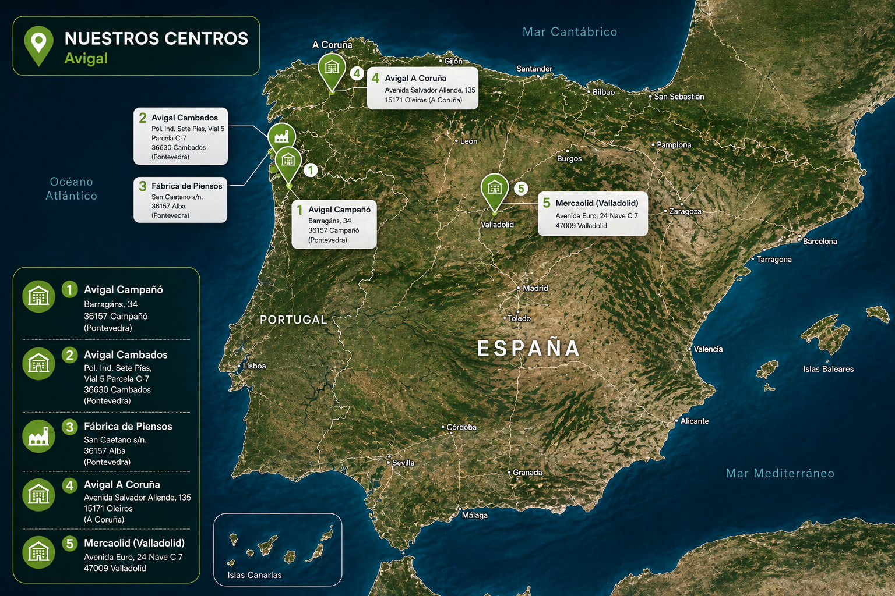

👥 Quienes Somos
Conoce nuestra empresa, nuestra actividad y los centros de trabajo que nos forman.
🏢 Nuestra Empresa
Avícola de Galicia, empresa del Grupo Vall Companys, es un referente del sector avícola con más de 50 años de experiencia en la producción, transformación y comercialización de productos de alta calidad. Desde sus raíces en Campañó (Pontevedra), la compañía ha crecido combinando tradición, innovación y compromiso con la excelencia, adaptándose a las nuevas demandas del mercado sin perder su identidad. Especializada en la cría de aves, fabricación de piensos y distribución de productos cárnicos, Avícola de Galicia trabaja bajo estrictos estándares de bienestar animal, seguridad alimentaria y sostenibilidad. Su equipo humano y la prevención de riesgos laborales son pilares clave de una empresa comprometida con las personas, el entorno y el desarrollo responsable.
Nuestro compromiso con las personas que forman parte de la empresa es uno de nuestros pilares fundamentales, por lo que la prevención de riesgos laborales ocupa un lugar prioritario en nuestra gestión diaria.
📍 Centros de Trabajo
La empresa está formada por los siguientes centros de trabajo:
